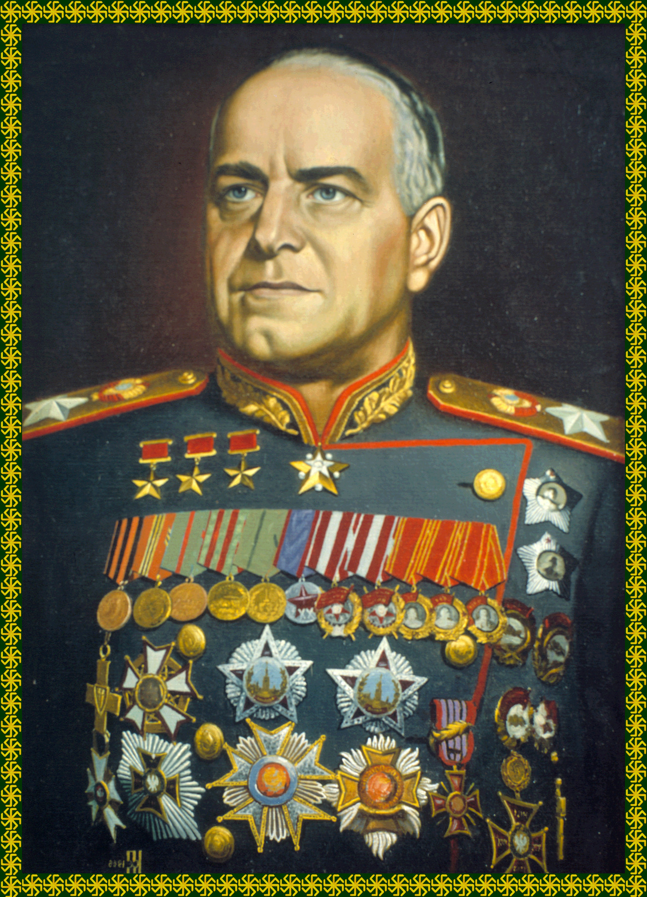

Orig 1.0 date 3.11.16/14:15:04.6
Rev 843.7 211.06.30/22:56:09.1
Remaining reading time:205 seconds. Excessive reading time subject to disciplinary action under Central Processing mandate 214.05.06.835 ‘Improve Efficiency Through Reductions in Reading Time’.
Many Troubleshooters before you have loyally served Alpha Complex and The Computer. It is now your honor to follow in their glorious struggle—stained with blood but never treason!—in helping The Computer achieve its imminent and inevitable victory over Communism.
Keep the heroic sacrifices of your predecessors ever in mind. Emulate their bravery against overwhelming odds. Use every bone and sinew, every drop of blood in your struggle, as they did. Let their ultimate immolation on the pyre of steadfast devotion be your example.
It will be fun!
Every Junior Citizen envies the exciting life of a Troubleshooter. Supporting The Computer’s ‘Great Complex’ initiative (replaces completed Happiness Initiative ‘Trust Can Be Fatal’ per HPD&MC dispatch HPD211.06.25/25 rev 6, Clearance RED), rooting out traitors and mutants, protecting helpless citizens from terror, corruption and subversion—this is more than the stuff of nightcycle vidshows. This is your high duty. This is why you are alive.
No matter how many stories you’ve heard at your current or previous security clearance about Mike-U-BCE-5 and -6, the truth about these legendary High Programmers and the origin of the Troubleshooters is more wonderful still.
Originally diligent INFRARED workers in the earliest years of The Computer, the Mike-BCE clone family earned The Computer’s trust, and Mike-BCE-5 and -6 both rose in clearance to the illustrious ranks of the High Programmers. Heed their example! Earn The Computer’s trust and you, too, may aspire to the highest service!
During his honorable early career, Mike-U-5 served The Computer loyally as Chief Supervisor of the Armed Forces. Only after a dangerous mission into the Outdoors Sector did Mike-U-5 succumb to the traitorous influence of mutant mind control. Even The Computer’s most trusted servants are always vulnerable, so be constantly alert!
Subverted and compelled to commit treason, Mike-U-5 returned to Alpha Complex and foolishly attempted to lead the Armed Forces and Internal Security in an uprising against your friend The Computer.
Not corrupted as his brother had been, Mike-U-6 put down the abortive uprising, but Mike-U-5 and certain renegade forces escaped The Computer’s justice. The lingering threat of Mike-U-5 and the temporary reduction in the strength of Alpha Complex defenses led Mike-U-6 to propose to The Computer the formation of a new elite service unit, the Troubleshooters.
Mike-U-BCE-6 led the Troubleshooters loyally on many missions in The Computer’s service. Ultimately he himself led the mission into Outdoors Sector to locate Mike-U-5. As you know from numerous vidshow adaptations, Mike-U-6 confronted his traitorous brother in a Communist stronghold and terminated him, but not before the treacherous brother mortally wounded the great High Programmer. The dying words of Mike-U-6 to his loyal Troubleshooters still hold true to this day: ‘Serve The Computer as it works to protect our Great Complex!’ (Replaces and corrects previous last words per HPD&MC dispatch HPD211.06.25/25 rev 6, Clearance RED)
The Computer has already shown its trust in you by promoting you to Security Clearance RED. By recruiting you now to its elite Troubleshooter service unit, The Computer demonstrates its confidence that you can face any problem caused by any traitor in any sector of Alpha Complex. Total victory is now in sight. Do your part! Fulfill your mission! Serve The Computer and you will rise rapidly in its service.
Beware! Traitors are everywhere! The safety of your fellow Troubleshooters and the security of Alpha Complex depend on you. Immediately report any treasonous or insubordinate behavior or any suspicion of treason or insubordination to The Computer. Failure to do so is treason.
Some of your fellow Troubleshooters may serve The Computer as guardians of Internal Security. They are here to protect you. They diligently report every hint of treasonous or insubordinate behavior to The Computer. Rejoice to know any treason among your companions will be discovered and punished!
You may be asked to test experimental equipment or perform vital services for your own or other service firms. Honor these simple requests, for they help The Computer protect and serve Alpha Complex!
Your missions may take you to unfamiliar sections of Alpha Complex. The traitors you face may try to subvert you with unfamiliar and treasonous ideas. Be prepared! Know the enemy! Guard against treason!
When you are troubled or uncertain, always remember the honorable legacy of the Troubleshooters who perished before you. Do as they did. Serve The Computer. The Computer is your friend.